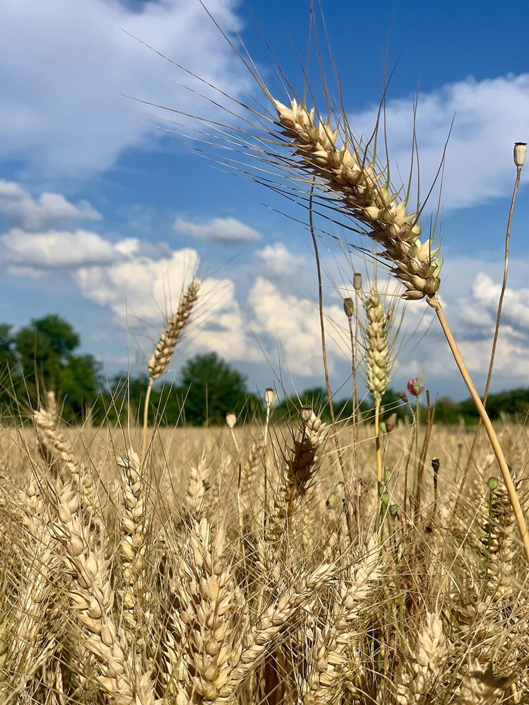

店のこと
店のこと
お店について確認できているのは、所在地とInstagramのアカウントだけです。
確認できていること
- 店名は「ぱんや」、業種はパン屋
- 所在地は山形県西置賜郡飯豊町小白川1778(〒999-1117)
- 電話番号はなし。連絡はInstagramから
- 営業時間・定休日・メニュー・価格・ご予約・駐車場は準備中
想像してみる(制作側の創作)
札の裏に書いたこと
このページの内容は、制作側が想像して書いたものです。お店の実際の様子・考え・メニューとは関係がありません。

カルタの札には、表に絵、裏に文字、という作りがあります。この試作ページでは、屋号の三文字を表に、そこから連想したことを裏に書きました。
町名の「飯豊」から、制作側は山の連なりを思い浮かべました(お店との関係は分かりません)。麦畑の写真を選んだのも、あくまで制作側の連想です。
お店の本当の話は、ぜひInstagramと、実際のご来店で。実際の写真や言葉は、ご提供いただいたものに差し替えます。
取り札